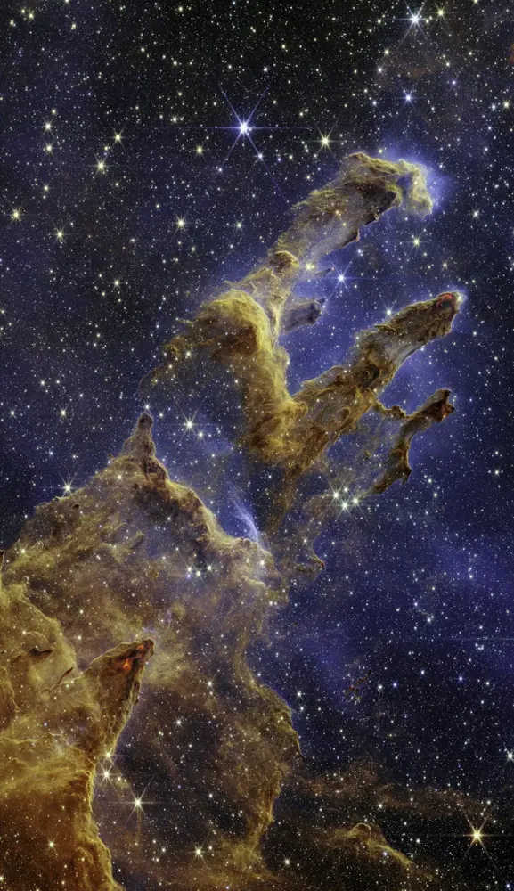
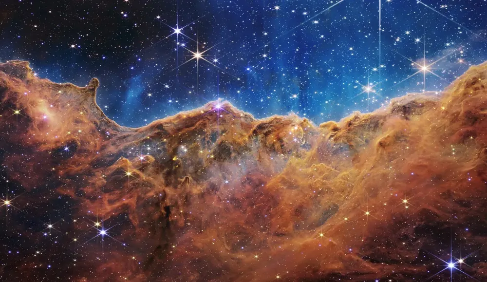

✨ Stars and constellationsतारे और तारामंडल
What stars are, and the patterns people have seen in them.तारे क्या हैं, और लोगों ने उनमें कौन-से आकार देखे।

📷 NASA, ESA, CSA, STScI; J. DePasquale, A. Koekemoer, A. Pagan (STScI) · Public domain

📷 NASA, ESA, CSA and STScI · Public domain
Stars are distant sunsतारे दूर के सूरज हैं
Every star is a sun. Some are much bigger than ours, though most are smaller, and all are so far away that they look like points. The nearest star after the Sun, Proxima Centauri, is about 4.2 light-years away: its light takes over four years to reach us.हर तारा एक सूरज है। कुछ हमारे सूरज से बहुत बड़े हैं, हालाँकि ज़्यादातर छोटे हैं, और सब इतनी दूर हैं कि बिंदु जैसे दिखते हैं। सूरज के बाद सबसे पास का तारा, प्रॉक्सिमा सेंटॉरी, लगभग 4.2 प्रकाश-वर्ष दूर है: उसकी रोशनी को हम तक आने में चार साल से ज़्यादा लगते हैं।
ConstellationsतारामंडलConstelacionesConstelaçõesConstellationsالأبراج
A constellation is a group of stars that seems to make a shape, like Orion (the hunter) or Ursa Major. Astronomers divide the whole sky into 88 constellations. The stars in one constellation are usually not close to each other at all; they only look close from Earth.तारामंडल तारों का एक समूह है जो कोई आकार बनाता लगता है, जैसे ओरायन (शिकारी) या सप्तर्षि वाला वृहत सप्तर्षि। खगोलविद पूरे आसमान को 88 तारामंडलों में बाँटते हैं। एक तारामंडल के तारे आमतौर पर एक-दूसरे के पास नहीं होते; बस पृथ्वी से पास दिखते हैं।
Saptarishi and the Pole Starसप्तर्षि और ध्रुव तारा
Seven bright stars of Ursa Major form the Saptarishi (Big Dipper). The two stars at its front point to Dhruv tara, the Pole Star, which stays almost still in the north while the whole sky turns around it. Travellers used it to find north.वृहत सप्तर्षि के सात चमकीले तारे सप्तर्षि बनाते हैं। इसके आगे के दो तारे ध्रुव तारे की ओर इशारा करते हैं, जो उत्तर में लगभग एक जगह टिका रहता है जबकि पूरा आसमान उसके चारों ओर घूमता है। यात्री इससे उत्तर दिशा पहचानते थे।
Why stars twinkleतारे टिमटिमाते क्यों हैं
Starlight passes through moving layers of Earth’s air, which bend it this way and that, so stars seem to twinkle. Planets twinkle much less because they look like tiny discs, not points.तारों की रोशनी पृथ्वी की हवा की हिलती परतों से गुज़रती है, जो उसे इधर-उधर मोड़ देती हैं, इसलिए तारे टिमटिमाते लगते हैं। ग्रह बहुत कम टिमटिमाते हैं क्योंकि वे बिंदु नहीं, नन्ही तश्तरी जैसे दिखते हैं।
- Stars are suns; planets only reflect light.तारे सूरज हैं; ग्रह सिर्फ़ रोशनी लौटाते हैं।
- 88 constellations. Saptarishi points to the Pole Star, which shows north.88 तारामंडल। सप्तर्षि ध्रुव तारे की ओर इशारा करता है, जो उत्तर दिखाता है।